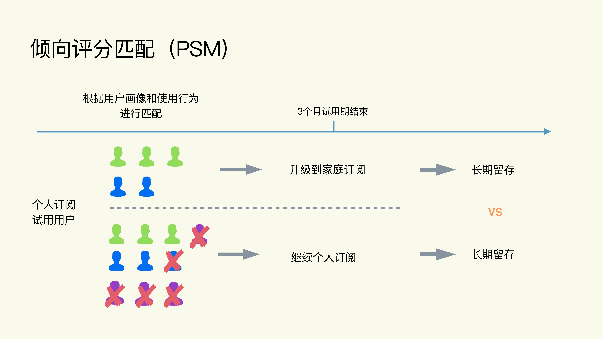
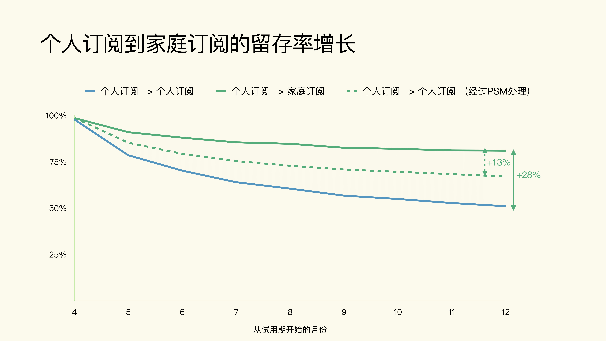
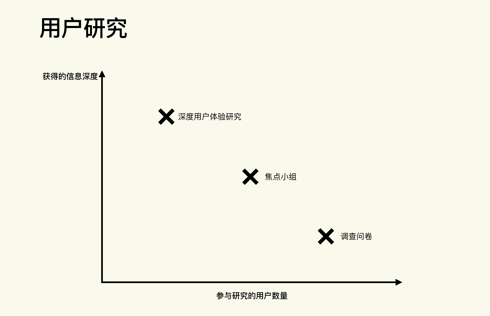

- 00 开篇词 用好A_B测试，你得这么学.md.html
- 01 统计基础（上）：系统掌握指标的统计属性.md.html
- 02 统计基础（下）：深入理解A_B测试中的假设检验.md.html
- 04 确定指标：指标这么多，到底如何来选择？.md.html
- 05 选取实验单位：什么样的实验单位是合适的？.md.html
- 06 选择实验样本量：样本量越多越好吗？.md.html
- 07 分析测试结果：你得到的测试结果真的靠谱吗？.md.html
- 08 案例串讲：从0开始，搭建一个规范的A_B测试框架.md.html
- 09 测试结果不显著，要怎么改善？.md.html
- 10 常见误区及解决方法（上）：多重检验问题和学习效应.md.html
- 11 常见误区及解决方法（下）：辛普森悖论和实验组_对照组的独立性.md.html
- 12 什么情况下不适合做A_B测试？.md.html
- 13 融会贯通：A_B测试面试必知必会（上）.md.html
- 14 举一反三：A_B测试面试必知必会（下）.md.html
- 15 用R_Shiny，教你制作一个样本量计算器.md.html
- 加餐 试验意识改变决策模式，推动业务增长.md.html
- 导读 科学、规范的A_B测试流程，是什么样的？.md.html
- 结束语 实践是检验真理的唯一标准.md.html
- 捐赠
12 什么情况下不适合做A_B测试？
你好，我是博伟。
我们知道，A/B测试是帮助公司实现持续增长的利器。然而，没有任何一种方法能解决所有的问题，让我们一劳永逸。A/B测试也是如此。
A/B测试可以解决大部分因果推断的问题。但在有些因果推断的业务场景下，A/B测试就不适用了。这个时候我们就需要另辟蹊径，换一种思路和方法来解决问题。
所以今天这节课，我们就来学习A/B测试在什么情况下不适用，如果不适用的话，有哪些相应的解决方法。
A/B测试在什么情况下不适用？
在实践中主要有3种情况下A/B测试不适用：
当没有办法控制想要测试的变量时
A/B测试是控制变量实验，它的一个前提就是我们必须可以控制想要测试的变量的变化，这样才能人为地给实验组和对照组的实验单位不同的用户体验。但是在有些情况下，我们就没有办法控制变量的变化。
你可能会有疑问，有这样的变量吗？
当然是有的，主要是用户个人的选择。我们能够控制的变量其实都是在产品和业务端，但是对于用户个人的选择，我们其实是没有办法、也不可能去控制的。毕竟用户都是有自由意志的，所以我们所有的营销方法都是努力去说服用户，但最终选择权还是在用户手里。
比如我们想要了解用户从QQ音乐换到网易云音乐后使用情况的变化，那更换音乐App就是我们想要测试的变量。需要注意的是，我们无法帮助用户决定是否要更换音乐App的行为，因此我们也没有办法做到真正的随机分组。
你可能会说，我们可以通过营销，给用户优惠甚至付费让用户去更换音乐App，这在实践上是可行的，但是在实验中就会产生新的偏差。因为对于外界激励，不同的用户会有不同的反应，我们可能只研究了对外界激励有反应的用户，而忽略了对外界激励没有反应的用户。这样得到的实验结果是不准确的。
当有重大事件发布时
重大事件的发布，主要指的是新产品/业务的发布，或者涉及产品形象的一些改变，比如商标/代言人的改变，我们往往是不能进行A/B测试的。因为凡是重大事件的发布会，都想要让尽可能多的用户知道，并且也花了大量营销的钱。在当下这个信息流通极度发达的互联网时代，不存在我公开发布了一个新品，只有一小部分用户知道这种情况，即使是中小企业也是如此。
比如苹果公司每年的新品发布会，并不会、也不可能事先去做大规模的用户A/B测试来看看新品的效果如何，然后再决定是否要发布。
再比如，一个公司如果想要改变自己的商标，就不能事先把用户进行分组，让实验组的用户接触新商标，对照组的用户接触旧商标。因为商标是一个公司或者产品的形象，你想想看，如果把用户进行分组，就会出现同一个产品同时有多个商标在市场流通的情况，那就会对用户造成困惑，而且也不利于产品形象的打造。
当用户数量很少时
这个其实很好理解，如果我们没有一定的流量能让我们在短时间内达到所需要的样本量的情况下，那么A/B测试也就不再适用了，不过这种情况其实在大数据的互联网行业中比较少见，这里我们就不展开讲解了。
当A/B测试不适用时有哪些替代方法？
当A/B测试不适用时，我们通常会选用非实验的因果推断方法和用户研究两类方法来替代，让你在想做因果推断却又不能进行A/B测试时，有新的思路和方法。
倾向评分匹配（Propensity Score Matching）
非实验的因果推断方法，又叫观察性研究，这其中最常用的就是倾向评分匹配（Propensity Score Matching），简称PSM。我在第9节课已经介绍了PSM，它的本质就是在历史数据中，通过模型的方法，人为地（而不是像实验那样随机地）构建出相似的实验组和对照组，最后再对两组进行比较。
这里我会通过一个音乐App的案例，来详细讲解下用PSM替代A/B测试时，是怎么在因果推断中应用的。
这款音乐App是付费订阅模式，有两种订阅方式：
- 个人订阅每月10块钱，只能供一个人使用。
- 家庭订阅每月20块钱，最多可以5人同时使用。
此外，不管是个人订阅，还是家庭订阅，只要是新用户，都会有3个月的免费试用期。
数据分析师通过大量的数据分析发现，家庭订阅比个人订阅用户的长期留存率（即续订率）更高。仔细想想其实也很好理解，家庭订阅可以和他人分享，所以每个订阅中的用户会更多一些，一般不止一个。而订阅中的用户越多，就越不容易取消这个订阅，所以长期留存率会越高。
于是这位数据分析师就根据这个分析发现，向营销经理推荐：可以向个人订阅的用户发广告，宣传家庭订阅的好处，鼓励他们升级到家庭订阅。
不过营销经理却提出了不同的意见：选择家庭订阅的用户和选择个人订阅的用户，在本质上就是不同的。比如他们的用户画像、使用行为等，都存在很大差异。也就是说，并不是升级本身导致了用户留存的提高，而是由于他们本来就是不同的用户，所以留存才不同。
为了验证营销经理的想法，数据分析师详细地分析了两种订阅方式的用户画像和使用行为，发现果然如营销经理所说，从个人订阅升级到家庭订阅的用户和没有升级的用户差别很大，比如升级的用户平均年龄更大，使用的时间更长等等。-

看到这里，你大概已经知道了，个人订阅升级到家庭订阅是否会提升用户留存率，其实是一个因果推断的问题。
数据分析师的观点是“从个人订阅升级到家庭订阅”这个原因，可以导致“用户留存提升”这个结果。
但是营销经理的意见是影响用户留存的因素有很多，在用户升级这个情境下并不能排除其他因素，因为升级是用户自己的选择，那么很有可能升级和不升级的用户本来就是两类不同的人，所以在其他因素不相似的情况下就不能只比较升级这一个因素。
两者的观点看起来都很合理，那我们该通过什么方法来验证谁对谁错呢？
验证因果推断的最好方法当然是做A/B测试了！但是在这个业务情景下，由于是否升级这个变化因素是用户的自主选择，我们并不能控制，所以就并不能做随机分配的实验。那么这个时候，非实验的因果推断方法PSM就可以派上用场啦。具体方法如下。
首先，我们从历史数据中选取在同一个时间范围内开始个人订阅的试用期用户。
在三个月试用期结束后还在付费的用户中，有的依旧是个人订阅，有的则升级成了家庭订阅。而在这自然形成的两类用户中，我们通过PSM的方法对用户的画像和使用行为等因素进行匹配，在没有升级的用户中选出和升级用户相似的用户，然后在这些相似用户中比较长期的用户留存：-
-
接着，进行完PSM后呢，我们再来比较下个人订阅和家庭订阅各自的用户画像和使用行为。-
 -
从数据中我们可以发现，经过PSM处理后的没有升级的用户和升级的用户，在各个特征上都已经非常相似了，那么这个时候我们就可以进行比较了。当我们比较时，因为已经控制了其他特征相似，两组只有“是否升级”这一项不同，所以如果用户留存有变化，那就说明是升级这个变化因素造成的。
-
从数据中我们可以发现，经过PSM处理后的没有升级的用户和升级的用户，在各个特征上都已经非常相似了，那么这个时候我们就可以进行比较了。当我们比较时，因为已经控制了其他特征相似，两组只有“是否升级”这一项不同，所以如果用户留存有变化，那就说明是升级这个变化因素造成的。
最后，我们来看一下最终的比较结果。下图中的纵轴是用户留存率，横轴是从试用期开始时的月份，因为试用期是3个月，且试用期内不存在续费问题，所以留存率就是100%， 那我们就从第4个月开始算用户留存率。- - 从图中可以看到，如果我们不做PSM的话，就像最开始数据分析师发现的那样，个人订阅升级到家庭订阅能够使一年的留存率提升28%， 但这是在没有剔除其他因素的情况下，所以28%这个结果就不够准确（营销经理的观点）。
那么经过PSM处理后，我们得到了和升级用户相似的非升级用户，结果发现升级确实能提升用户留存，不过只能提高13%，那就说明只有13%的用户留存率的提升可以归因于用户升级。
这里我们通过PSM，在剔除了其他因素的影响之后，模拟出了一个控制变量实验，从而确定了个人订阅升级到家庭订阅对用户留存所带来的准确影响。
用户研究
用户研究适用于A/B测试无法进行时，比如新产品/业务发布前的测评，我们就可以通过直接或间接的方式，和用户交流沟通来获取信息，从而判断相应的变化会对用户产生什么影响。
用户研究的方法有很多种，我们今天主要来聊一聊常用的几种：深度用户体验研究（Deep User Experience Research），焦点小组（Focus Group）和调查问卷（Survey）。
深度用户体验研究，指的是通过选取几个潜在用户进行深度的信息提取，比如通过用户眼球的运动来追踪用户的选择过程的眼动研究，或者用户自己记录的日记研究。
- 眼动研究能让我们了解到用户的正常使用流程是什么样的，在哪些阶段会有卡顿或者退出。
- 日记研究通过用户自己记录的使用情况和意向，来了解他们的反馈。
焦点小组是有引导的小组讨论，由主持人把潜在的用户组织起来，引导大家讨论不同的话题，然后根据大家在讨论中发表的不同意见，综合得出反馈意见。从小组讨论这个形式就可以看出，每次焦点小组能够组织的用户一般要比深度用户体验研究的用户数量要多，但是比调查问卷的用户数量要少。
调查问卷就是通过事先设计好想要了解的问题，可以是选择题或者开放式的问题，比如对新品/新业务的想法和感受。然后把这些问题做成问卷发放给潜在的用户。交流方式可以是面对面、线上或者是电话等等，然后根据不同用户的回答结果，统计出大致的反馈结果。- - 从图中可以看出，从深度的用户体验研究，到焦点小组，再到调查问卷，虽然参与的用户越来越多，但是团队从每个用户身上获得的信息深度会越来越浅，所以选择何种方法也取决于你能招募到多少潜在用户，有没有相应的条件与设备（比如眼动研究需要眼动仪来完成），还有想要得到的信息深度。
小结
今天这节课我们讲解了A/B测试的局限性，通过案例介绍了非实验的因果推断方法-倾向评分匹配（PSM），也带你简单了解了用户研究的相关方法。实践中出现较多的还是我们没有办法控制的用户选择这种变量，主要会用到PSM这种非实验的因果推断方法。那么用户研究在实践中不仅可以用于新产品/业务的测评，还可以用于产生新指标的想法（比如我在第3节课中讲到的定性+定量相结合的方法来确定指标）。
那么从开头到今天这节课呢，我们的专栏讲解了A/B测试的统计原理，标准的流程以及实践中各种常见问题及解决方法。说到应用这些经验和方法论呢，工作场景自然是最佳场所，不过还有另一个实践的好机会，那就是在面试中。
那么在接下来的两节课，我就会带你去过一遍面试中常考的A/B测试问题。同时，我也建议你先梳理下自己面试时曾被问到的那些问题，以及自己当时自己是怎么回答的。这样，我们在学习后面两讲内容的时候，也会更有针对性。
思考题
结合自己的经验，想一想你有没有见到过或经历过想进行因果推断相关的分析但是A/B测试却不适用的情况？详细说一说原因和结果。
欢迎你把对本节课的思考和想法分享在留言区，我会在第一时间给你反馈。
© 2019 - 2023 Liangliang Lee. Powered by gin and hexo-theme-book.